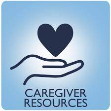
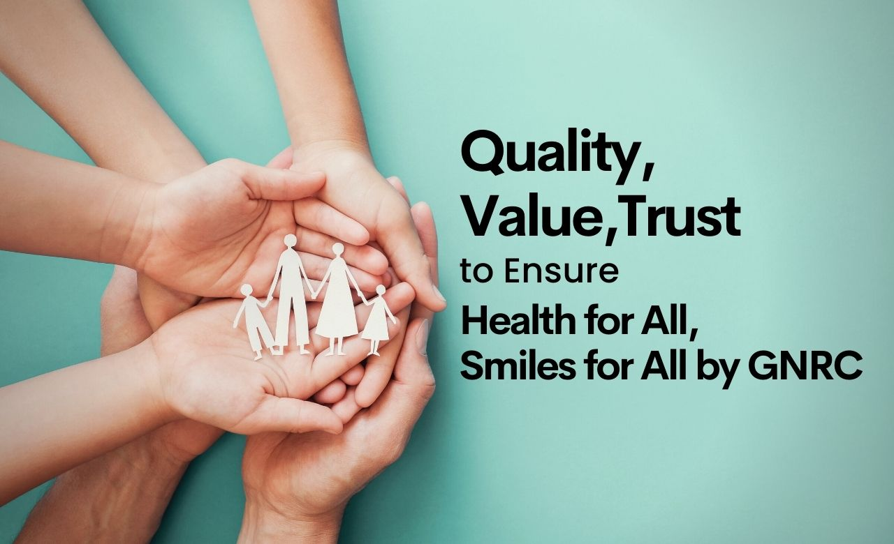

At the Caregiver System, we understand the unique challenges of providing compassionate care. Our platform is designed to connect families and caregivers, ensuring that individuals in need of support receive the best care possible.
We match families with qualified, vetted caregivers who can offer personalized, compassionate care.

Offering training, support, and guidance to caregivers to ensure they are equipped to meet the needs of their clients.

We rigorously vet caregivers to ensure they meet the highest standards of care and professionalism.